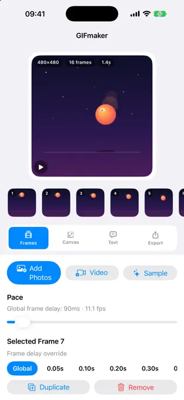
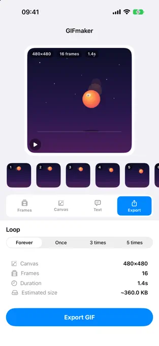

GIF maker apps for iPhone
3 best GIF maker apps for iPhone, compared.
GIFmaker, ImgPlay, and GIF Maker compared for video conversion, frame editing, AI tools, pricing, privacy disclosures, and iOS support.


Quick answer
Choose by editing workflow, not by the longest feature list.
GIFmaker-Gif Studio is the focused option for turning photos, videos, and Live Photos into GIFs with per-frame timing, captions, filmstrip editing, reverse, and boomerang controls. Its listing explicitly says editing stays on the iPhone with no account or uploads.
ImgPlay is the broad-format option, adding burst shots, screen recordings, frame-level editing, AI background removal, and export to GIF, MP4, APNG, or WebP. GIF Maker - Memes & GIFs is the AI-heavy option for text-generated GIFs, face swaps, memes, filters, and social effects.
GIFmaker, when on-device editing, no account, detailed timing, and a simple GIF export flow matter most.
ImgPlay, when you need many source types, visual adjustments, stickers, and several export formats.
GIF Maker - Memes & GIFs, when text generation, face swaps, meme tools, and social effects are the priority.
Method and disclosure
This comparison uses current official App Store listings.
We checked the public US App Store metadata for all three apps on . The comparison records what each developer currently publishes about sources, editing controls, exports, subscriptions, and minimum iOS versions. It does not invent image-quality scores or claim that every paid feature was independently tested.
Disclosure: CrazyAIAgent publishes GIFmaker-Gif Studio. We receive no affiliate payment for the competitor links. The recommendations are split by workflow so the developer relationship does not become a manufactured overall ranking.
Feature comparison
GIFmaker vs ImgPlay vs GIF Maker.
Start with the source media and editing control you need, then check the live purchase sheet before accepting a trial or subscription.
Choose by workflow
The best app depends on what you are making.
A reaction loop, product demo, meme, and social video do not need the same editor. For a short video-to-GIF conversion, prioritize trimming, frame timing, loop direction, and export size. For a designed social asset, broader stickers, filters, fonts, and alternate formats may matter more.
AI tools are useful only when they match the job. Text generation and face swaps can create a starting point, but they do not replace precise timing or a clean first-to-last-frame transition in a traditional GIF.
Choose an editor with trimming, frame-rate control, timing, and a preview that makes the restart point easy to inspect.
Prioritize text tools, stickers, canvas ratios, platform exports, and any watermark or subscription limits that affect sharing.
Prefer an explicit on-device workflow, read the current privacy label, and avoid uploading private clips to features you do not need.
Cost and compatibility
Free download does not mean every feature is free.
All three listings currently show a free download. ImgPlay describes Premium plans, including watermark removal and advanced saving options. GIF Maker - Memes & GIFs lists subscription tiers for unlimited creation and premium AI, filters, stickers, and fonts. GIFmaker's current description presents its core editor without advertising a subscription.
Check the App Store purchase sheet immediately before confirming. Trial length, renewal interval, regional price, and included features can change independently of this page.
Confirm resolution, watermark behavior, file format, frame limits, and whether the free result works in the destination app.
GIFmaker currently requires iOS 17.0, while the two competitors in this comparison currently list iOS 15.0.
For any recurring plan, review the renewal date and manage the subscription in your Apple Account settings.
FAQ
GIF maker app questions answered.
What is the best GIF maker app for iPhone?
There is no single winner for every workflow. GIFmaker is the focused choice for on-device editing without an account or uploads, ImgPlay offers the widest mix of source and export formats in this comparison, and GIF Maker emphasizes AI generation, face swaps, memes, and social effects.
Which iPhone apps can turn a video into a GIF?
All three current App Store listings say they can turn videos into GIFs. GIFmaker adds per-frame timing and filmstrip controls, ImgPlay adds extensive frame editing and multiple export formats, and GIF Maker combines conversion with AI and meme tools.
Are these GIF maker apps free?
All three are currently free to download in the US App Store. ImgPlay and GIF Maker - Memes and GIFs describe optional subscriptions or premium features. Offers can change, so review the App Store purchase sheet before confirming a trial or subscription.
Which GIF maker works without an account or media uploads?
GIFmaker's current listing explicitly says its editing runs on the iPhone with no account and no uploads. The competitor descriptions reviewed for this comparison do not make the same explicit core-workflow statement, so check their current privacy labels and policies before importing sensitive media.
Do I need AI features to make a GIF on iPhone?
No. Video trimming, frame order, timing, captions, canvas controls, and loop direction are enough for most GIFs. AI features are optional when you specifically want text-to-GIF generation, face swaps, or automatic background removal.